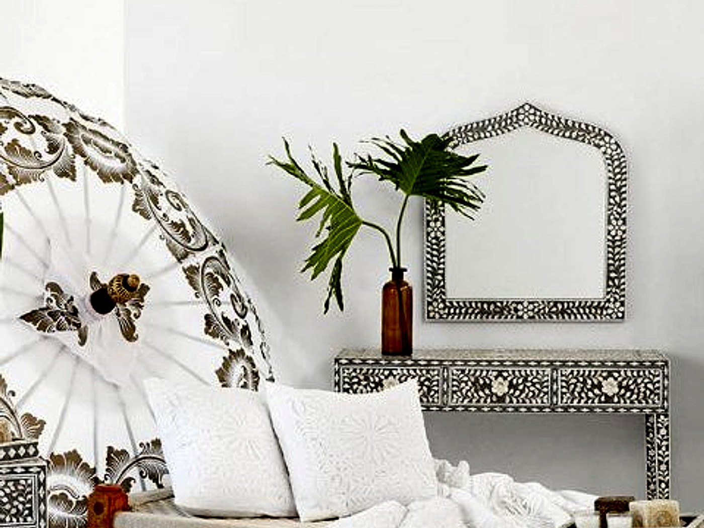

Blog Article
Artisan skills passed down from generation to generation

When a home is furnished with handmade pieces, you can usually sense the difference before you describe it. The weight of the materials, the way a finish catches the light, and the small irregularities that make an item feel human all contribute to a room with more emotional depth. That is why artisan skill still matters so much in collections like those at Pilgrimage Livingspaces online store.
Why craftsmanship changes the feel of a room
Handcrafted furniture does more than fill space. It gives a room a point of view, especially when paired with decor and homeware that share the same tactile warmth. Instead of looking assembled from identical parts, the space begins to feel layered, calm and personal.
What customers should look for
When comparing handmade pieces, pay attention to texture, proportion and how the item will live with the rest of your room. A handcrafted table, cabinet or decorative object should not only look striking on its own, but also help the rest of the space feel more grounded. Textiles and soft furnishings are often the next step, because they echo that same sense of hand-finished comfort.
Practical takeaway
Start with the piece that will carry the strongest visual weight in your room, then build around it with homeware and textiles that support the same mood. This approach helps you create a space with consistency and story rather than buying disconnected items one by one.
If you are ready to begin, you can browse the online shop snapshot, send an enquiry, or return to the blog for more guidance. You can also go back to the home page to explore the full site.